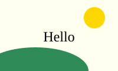
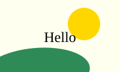
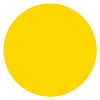
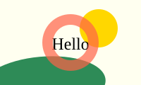

Quickstart¶
A document and some shapes¶
import svgwriter as svg
doc = svg.Document(200, 120) # width, height and a matching viewBox
doc.rect(0, 0, 200, 120, fill="ivory")
sun = doc.circle(160, 30, 18, fill="gold")
hill = doc.ellipse(60, 120, 90, 40, fill="seagreen")
doc.text("Hello", x=100, y=70, font_size=24, text_anchor="middle")
doc.save("hello.svg")

Every SVG element is a class (svg.Circle) with a lowercase alias (svg.circle). Documents and groups
have shortcuts (doc.circle(...)) that build, add and return the element. Keyword arguments are SVG
attributes in Python spelling: stroke_width is stroke-width, class_ is class.
Move things¶
sun.translate(-20, 10) # move
sun.scale(1.5) # about its centre (the anchor)
hill.rotate(-5) # degrees, clockwise on screen
print(sun.position) # where its centre is now


Geometry attributes (cx, x, d, …) stay as written; placement goes through the element’s
transform t. See Geometry and transforms.
Combine and measure¶
ring = svg.circle(0, 0, 40) - svg.circle(0, 0, 25) # boolean difference, a <path>
print(ring.total_length(), ring.contains_point(30, 0))
doc += ring.place(100, 60).update(fill="tomato", opacity=0.7)

Render and export¶
pixels = doc.rasterize(scale=2) # numpy float32 RGBA, shape (240, 400, 4)
doc.save("hello.png", scale=2)
doc.save("hello.pdf") # vector PDF
doc.save("hello.tex") # TikZ

Read it back¶
again = svg.Document.open("hello.svg")
print(again[0].tag, len(again)) # top-level content by index

Start a project¶
For a design with its own theme, components and outputs, start a project folder from a preset and let the command line build it:
svgwriter new my-poster --preset poster # or: blank, slides, animation (--notebook for main.ipynb)
cd my-poster
svgwriter preview # a browser page that reloads on every save
svgwriter build # PDF, SVG and PNG into output/
Named sizes work in any document: svg.Document(size="a4") draws in millimetres. See
Projects.
More examples¶
The examples/ folder of the repository is a numbered learning path of runnable scripts (examples/01_basic_shapes/ to examples/21_batches/), each a folder with the script and a Jupyter notebook beside it that shows the results as pictures.